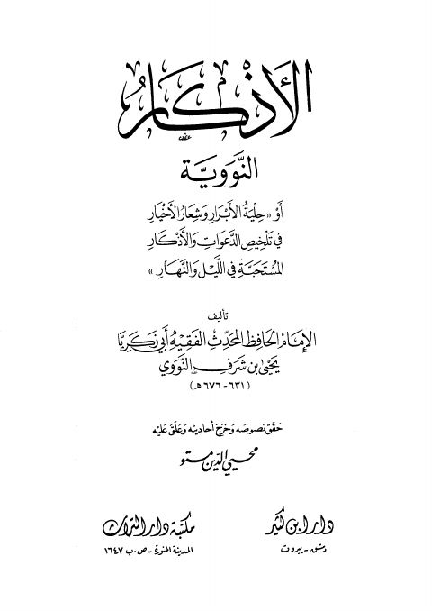

Downloads need an internet connection.
الأذكار النووية- ط ابن كثير
Authors: يحيى بن شرف النووي
Editors: محيي الدين مستو
Publishers: دار ابن كثير
▫️ العنوان: الأذكار النووية- ط ابن كثير ▪️ المؤلف: #محيي_الدين_يحيى_بن_شرف_النووي ▫️ المحقق: #محيي_الدين_مستو ▪️ الناشر: #دار_ابن_كثير ▫️ تاريخ النشر: 1410هـ 1990م ▪️ بلد النشر: دمشق، #سورية ▫️ الطبعة: 2 ▪️ عدد الأجزاء: 1 ▫️ الصفحات: 720 ▪️ نوع الوعاء: #كتاب ▫️ التصنيف الرئيسي: #الزهد_والرقائق ۪